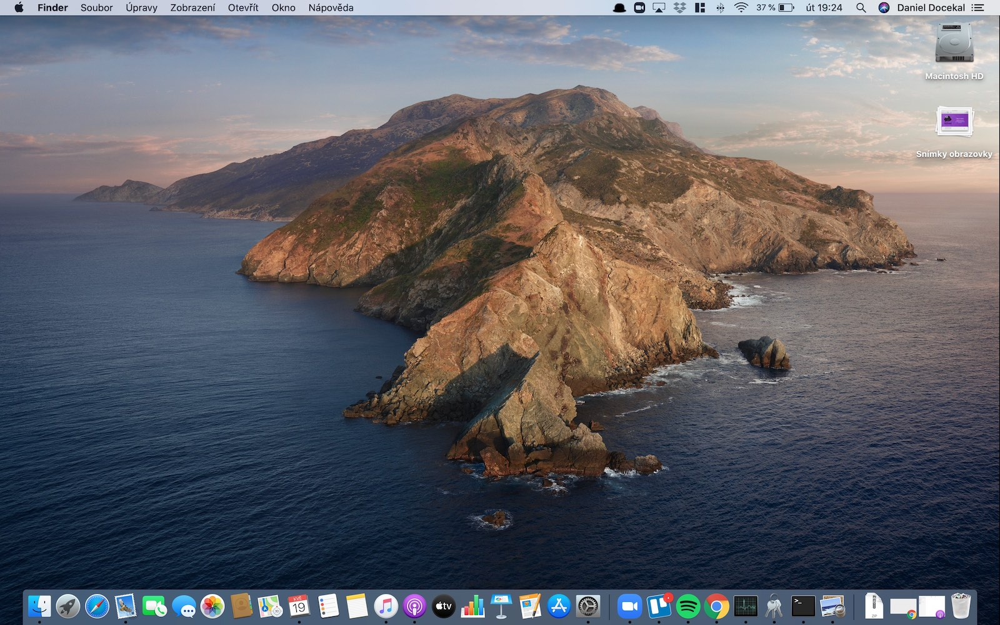

Les systèmes d'éxploitations:
Les systèmes d'éxploitations sont l'ensemble des programmes qui utilise les ressources d'un appareil comme les ordinateurs,les téléphones ou autre machine.Il est aussi appelé OS.Le premier etait Multics qui est sortit en 1965 et créer par Fernando Corbató et Jerry Saltzer. Je vais vous parlez de quatre OS qui sont Windows, MacOS, Android et Linux. Il ont tous des interfaces différente et nous allons vous les montrez.
Windows est un systèmes d'exploitation utilisé sur la majorité des ordinateurs comme au lycée (dont vous pouvez voir le logo dans l'onglet), il est le plus connu et a été créer en 1985 et possédent cinq version très connu Windows:XP,Vista,7,10 et en ce moment la dernière version Windows 11.
Voici l'interface de Windows 10:

MacOS est un systèmes d'exploitation utilisé sur les ordinateurs de chez Apple créer en 2001, il a une interface différente de Windows mais il reste assez simmilaire mais ne fonctionne pas tout à fait pareille.
Voici l'interface de MacOS:

{kind=link}
Android est un systèmes d'exploitation utilisé sur les téléphone, il a été créer par google en 2008 il est un des plus utilisé sur téléphone avec IOS et est le plus connu de tout les systèmes d'exploitation mobile.
Voici l'interface d'Android:
{kind=link}
Linux est un systèmes d'exploitation utilisé sur les ordinateurs, il a été créer en 1991 il est moin connu que les autres mais fait quand même partie des principaux systèmes d'éxploitations surtout utilisé pour les serveur.
Voici l'interface de Linux:
{kind=link}